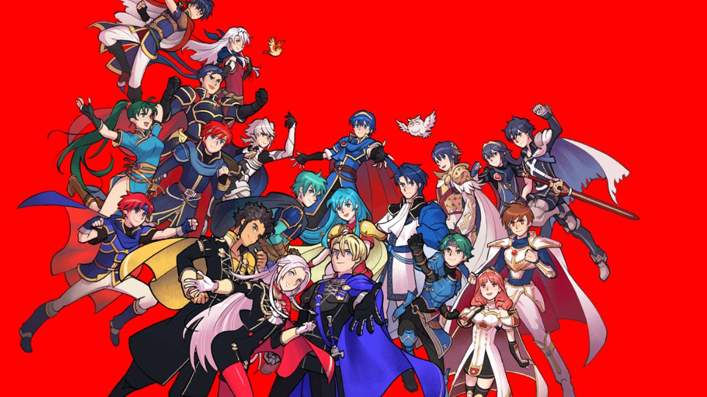

As a Fire Emblem fan of three years, this series is very near and dear to my heart. However, I recognize that it's not for everybody. People who aren't fans of strategy games or even combat based games (as combat is involved to some degree) would most likely not enjoy this series. Still, in my opinion, the series is worth trying due to its fun combat system and its amazing storytelling. If you're even remotely interested, I'd say give it a try! I wasn't big on strategy games either and I never really tried playing one but when one of my friends bought me Fates for my birthday a couple years back, I played it and I've been hooked ever since. I have three options if you want to give the series a try. I would recommend Fates, Awakening, or Three Houses. The first two I would recommend because of the combat system, it's really easy to learn. While Three Houses' combat system isn't necessarily hard and it isn't even that different from the other two, I simply feel that Awakening and Fates' systems and battle menus are slightly more simplistic and have less going on. Plus, since they are both on the Nintendo 3DS, there are less buttons and controls in comparison to the Nintendo Switch.

I recommend Three Houses for newcomers because of the story. The game blows Fates and Awakening out of the water in terms of its storytelling. I introduced my brother to Fire Emblem through this game; he liked the story and didn't have a hard time playing it either. Though the game does add more combat options and may not be as simplistic, newcomers will still be able to get the hang of it over time. Of course, the amazing story is a plus as well. I'd say it has the best story of any Fire Emblem game I've played thus far. In the end, I'd recommend any of these for those who are curious about the series.
However, on a side note, if you want something on the smaller scale, I would also recommend the free app game Fire Emblem Heroes. It has
smaller sized maps and the combat is very simplified. It gives you a sample of what the series is and based on that you can determine if you want to pursue it further. However, be warned that there are in app purchases and the way you get new characters in the game is basically through a gambling-like system. It also is a spinoff app game, so you'll be missing out on a compelling story as well.